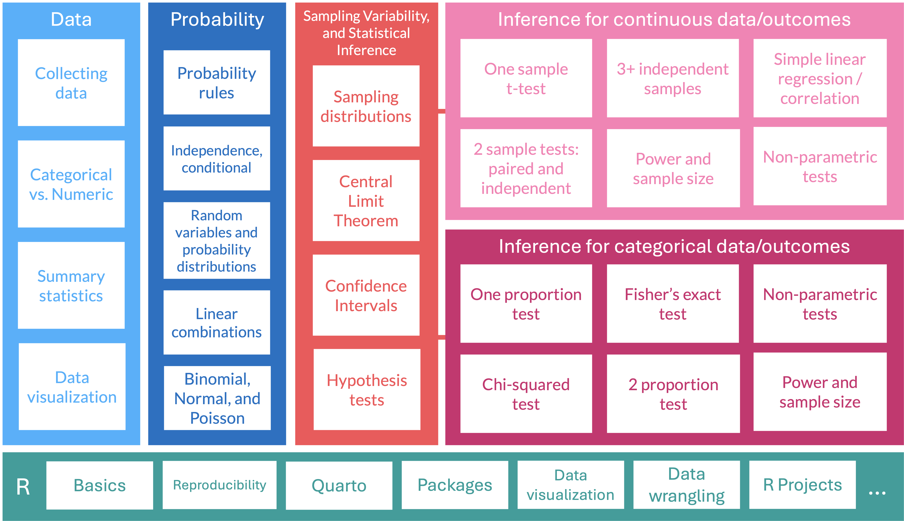
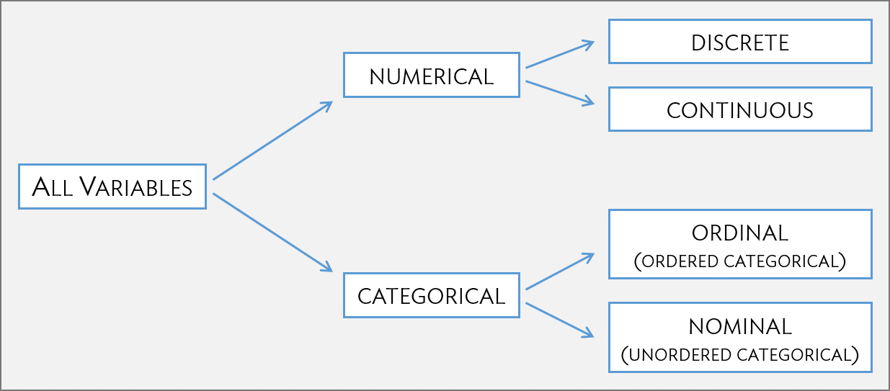
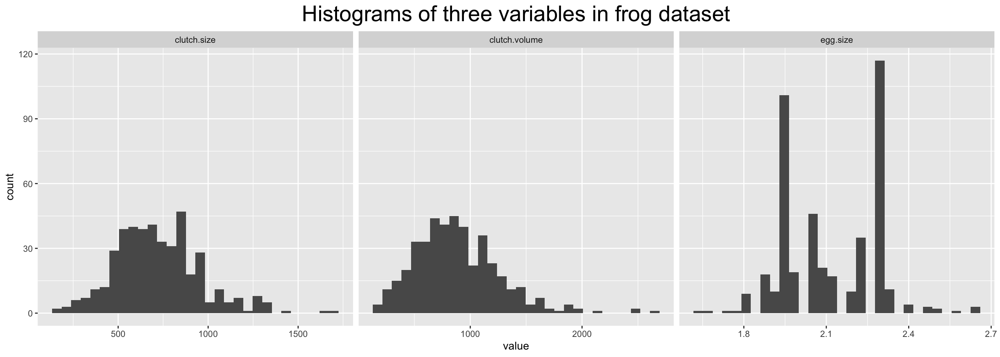
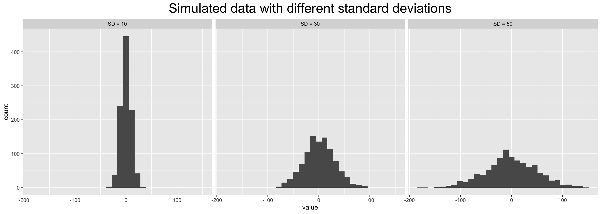
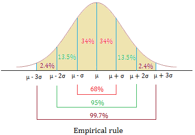

[1] 882.474Lesson 2: Intro to data & numerical summaries
TB sections 1.2, 1.4
Meike Niederhausen and Nicky Wakim
2025-10-01
Learning Objectives
- Define observations and variables, and recognize them in a data frame.
- Define four variable types in data.
- Define and calculate measures of center (including mean and median).
- Define and calculate measures of spread (including standard deviation and interquartile range).
Where are we?

Learning Objectives
- Define observations and variables, and recognize them in a data frame.
- Define four variable types in data.
- Define and calculate measures of center (including mean and median).
- Define and calculate measures of spread (including standard deviation and interquartile range).
Intro to Data

Example: the frog study1
In evolutionary biology, parental investment refers to the amount of time, energy, or other resources devoted towards raising offspring.
We will be working with the frog dataset, which originates from a 2013 study2 about maternal investment in a frog species. Reproduction is a costly process for female frogs, necessitating a trade-off between individual egg size and total number of eggs produced.
Researchers were interested in investigating how maternal investment varies with altitude. They collected measurements on egg clutches found at breeding ponds across 11 study sites; for 5 sites, the body size of individual female frogs was also recorded.
Poll Everywhere Question 1
Four rows from frog data frame
| altitude | latitude | egg.size | clutch.size | clutch.volume | body.size | |
|---|---|---|---|---|---|---|
| 1 | 3,462.00 | 34.82 | 1.95 | 181.97 | 177.83 | 3.63 |
| 2 | 3,462.00 | 34.82 | 1.95 | 269.15 | 257.04 | 3.63 |
| 3 | 3,462.00 | 34.82 | 1.95 | 158.49 | 151.36 | 3.72 |
| 150 | 2,597.00 | 34.05 | 2.24 | 537.03 | 776.25 | NA |
Four rows from frog data frame
| altitude | latitude | egg.size | clutch.size | clutch.volume | body.size | |
|---|---|---|---|---|---|---|
| 1 | 3,462.00 | 34.82 | 1.95 | 181.97 | 177.83 | 3.63 |
| 2 | 3,462.00 | 34.82 | 1.95 | 269.15 | 257.04 | 3.63 |
| 3 | 3,462.00 | 34.82 | 1.95 | 158.49 | 151.36 | 3.72 |
| 150 | 2,597.00 | 34.05 | 2.24 | 537.03 | 776.25 | NA |
- Each row is an observation
- Each column is a variable
- All the observations and variables together make a data frame (sometimes called data matrix)
- Missing values:
NAmeans the measured value for body size in clutch #150 is missing
Frog study: variables and their descriptions
- Variables are recorded characteristics for each observation
| Variable | Description |
|---|---|
altitude |
Altitude of the study site in meters above sea level |
latitude |
Latitude of the study site measured in degrees |
egg.size |
Average diameter of an individual egg to the 0.01 mm |
clutch.size |
Estimated number of eggs in clutch |
clutch.volume |
Volume of egg clutch in mm³ |
body.size |
Length of egg-laying frog in cm |
Learning Objectives
- Define observations and variables, and recognize them in a data frame.
- Define four variable types in data.
- Define and calculate measures of center (including mean and median).
- Define and calculate measures of spread (including standard deviation and interquartile range).
Types of variables (1/2)
Numerical variables
Numerical variables take on numerical values, such that numerical operations (sums, differences, etc.) are reasonable.
Discrete: only take on integer values (e.g., # of family members)
Continuous: can take on any value within a specified range (e.g., height)
Categorical variables
Categorical variables take on values that are names or labels; the possible values are called the variable’s levels.
- Ordinal: exists some natural ordering of levels (e.g., level of education)
- Nominal: no natural ordering of levels (e.g., gender identity)
Types of variables (2/2)

Poll Everywhere Question 2
Poll Everywhere Question 3
Variable (column) types in R
- We have not done much with
Ryet, but I want this to serve as a reference for you! - Variable types (as we speak them) are translated by
Ra little differently - Below is the mapping of
Rtypes to variable types
| R type | Variable type | Description |
|---|---|---|
| integer | discrete | integer-valued numbers |
| double or numeric | continuous | numbers that are decimals |
| factor | categorical | categorical variables stored with levels (groups) |
| character | categorical | text, “strings” |
| logical | categorical | boolean (TRUE, FALSE) |
Exploring data initially
- Techniques for exploring and summarizing data differ for numerical versus categorical variables.
- Numerical and graphical summaries are useful for examining variables one at a time
- Can also be used for exploring the relationships between variables
- Numerical summaries are not just for numerical variables (certain ones are used for categorical variables)
Let’s start looking into ways to summarize and explore numerical data!
- We will come back to categorical variables another day
Learning Objectives
- Define observations and variables, and recognize them in a data frame.
- Define four variable types in data.
- Define and calculate measures of center (including mean and median).
- Define and calculate measures of spread (including standard deviation and interquartile range).
Warning!
I decided to keep some R code in these slides. It’s going to be a little confusing now, but I thought it would be a worthwhile reference as soon as we get through R basics
Measures of center: mean
Sample mean
the average value of observations
\[\overline{x} = \frac{x_1+x_2+\cdots+x_n}{n} = \sum_{i=1}^{n}\frac{x_i}{n}\]
where \(x_1, x_2, \ldots, x_n\) represent the \(n\) observed values in a sample
Example: What is the mean clutch volume in the frog dataset?
\[\overline{x} = \sum_{i=1}^{431}\frac{x_i}{431}\]
Answer: the mean clutch volume is 882.5 \(\text{mm}^3\).
Measures of center: median
Median
The middle value of the observations in a sample
The median is the 50th percentile, meaning
- 50% of observations lie below the median
- 50% of observations lie above the median
- If the number of observations is
- Odd: the median is the middle observed value
- Even: the median is the average of the two middle observed values
- We can calculate the median clutch volume
Measures of center: mean vs. median

- Mean values will be pulled towards extreme values
Learning Objectives
- Define observations and variables, and recognize them in a data frame.
- Define four variable types in data.
- Define and calculate measures of center (including mean and median).
- Define and calculate measures of spread (including standard deviation and interquartile range).
Measures of spread: standard deviation (SD) (1/3)
Standard deviation (SD)
(Approximately) the average distance between an observation and the mean
- An observation’s deviation is the distance between its value \(x\) and the sample mean \(\overline{x}\): deviation = \(x - \overline{x}\)

Measures of spread: SD (2/3)
- The sample variance \(s^2\) is the sum of squared deviations divided by the number of observations minus 1. \[s^2 = \frac{(x_1 - \overline{x})^2+(x_2 - \overline{x})^2+\cdots+(x_n - \overline{x})^2}{n-1} = \sum_{i=1}^{n}\frac{(x_i - \overline{x})^2}{n-1}\] where \(x_1, x_2, \dots, x_n\) represent the \(n\) observed values.
- The standard deviation \(s\) (or \(sd\)) is the square root of the variance. \[s = \sqrt{\frac{({x_1 - \overline{x})}^{2}+({x_2 - \overline{x})}^{2}+\cdots+({x_n - \overline{x})}^{2}}{n-1}} = \sqrt{\sum_{i=1}^{n}\frac{(x_i - \overline{x})^2}{n-1}}\]
Measures of spread: SD (3/3)
Let’s calculate the sample standard deviation for the clutch volume:
\(s = \sqrt{\sum_{i=1}^{n}\frac{(x_i - \overline{x})^2}{n-1}} =\)
- Doing this by hand would be really time consuming!
Rcan easily do this for us!
Answer: The standard deviation of the clutch volume is 379.05 mm3
Empirical Rule: one way to think about the SD
For symmetric bell-shaped data, about
- 68% of the data are within 1 SD of the mean
- 95% of the data are within 2 SD’s of the mean
- 99.7% of the data are within 3 SD’s of the mean
These percentages are based off of percentages of a true normal distribution.

Measures of spread: interquartile range (IQR) (1/2)
The \(p^{th}\) percentile is the observation such that \(p\%\) of the remaining observations fall below this observation.
- The first quartile \(Q_1\) is the \(25^{th}\) percentile.
- The second quartile \(Q_2\), i.e., the median, is the \(50^{th}\) percentile.
- The third quartile \(Q_3\) is the \(75^{th}\) percentile.
Interquartile range (IQR)
The distance between the third and first quartiles. \[IQR = Q_3 - Q_1\]
- IQR is the width of the middle half of the data
Measures of spread: IQR (2/2)
5 number summary
Min. 1st Qu. Median Mean 3rd Qu. Max.
151.4 609.6 831.8 882.5 1096.5 2630.3 \[IQR = Q_3 - Q_1 = 1096.5 - 609.6 = 486.9\]
Robust estimates
Summary statistics are called robust estimates if extreme observations have little effect on their values
| Estimate | Robust? |
|---|---|
| Sample mean | ❌ |
| Median | ✅ |
| Standard deviation | ❌ |
| IQR | ✅ |
- For samples with many extreme values, the median and IQR might provide a more accurate sense of the center and spread
Poll Everywhere Question 4
Lesson 2 Slides